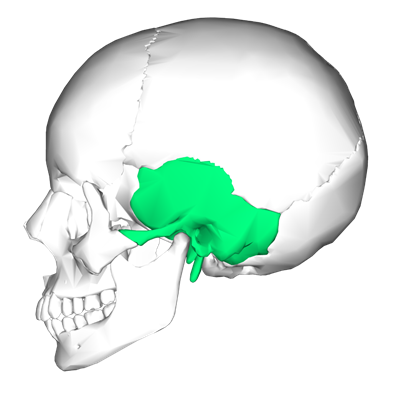
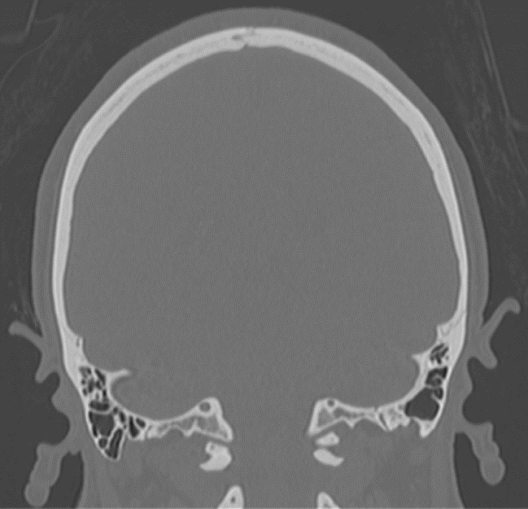

Oído, el origen
Anatomía, embriología y malformaciones congénitas
Introducción
Introducción
- Conocimiento integral
- Anatomía
- Desarrollo: malformaciones
- Oído externo y medio: TAC
- Oído interno: RM
- Identificación: Pronóstico y prequirúrgico
Objetivos
Objetivos
- Anatomía
- Hueso temporal
- Oído
- Imágenes: TAC y RM
- Embriología
- Malformaciones congénitas
- Panorama en la FVL
Anatomía
Anatomía: Hueso Temporal
Hueso Temporal
Hueso Temporal
Hueso Temporal
Porción escamosa
Porción mastoidea
Porción mastoidea
- Aditus ad antrum
Porción mastoidea
- Septo de Körner (Fisura petroescamosa)
Porción mastoidea
- Septo de Körner (Fisura petroescamosa)

Porción mastoidea
- Eminencia mastoidea


Etimología
- Griego: Masto
Porción petrosa
Ápex petroso
Porción petrosa
- Superficie anterior:
- Tegmen timpani
Porción petrosa
- Superficie anterior:
- Eminencia arcuata
Porción petrosa*
- Superficie posterior:
- Poro acústico
- Acueducto vestibular
- Acueducto coclear
Porción timpánica
Porción estiloidea
Anatomía: Oído
Oído
Oído externo
Oído externo
- Pabellón y CAE

Oído externo
Oído externo
Oído externo
Relaciones
Oído medio

Oído medio
- Memb. timpánica
- Trompa de Eustaquio
- Huesecillos

Oído medio
- Paredes
- Superior: Tegmen tympani - Separa la cavidad craneal de la timpánica

Oído medio
- Paredes
- Inferior: yugular (piso)
Oído medio
- Paredes
- Lateral (Membranosa)
Axiales